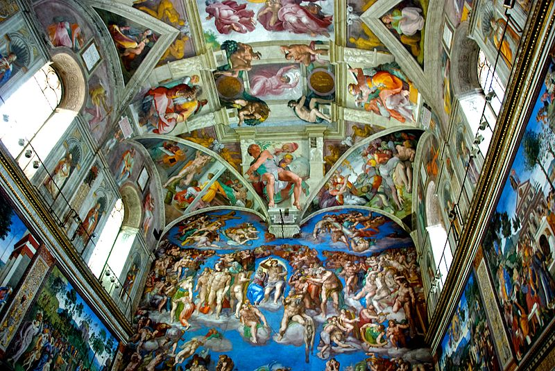
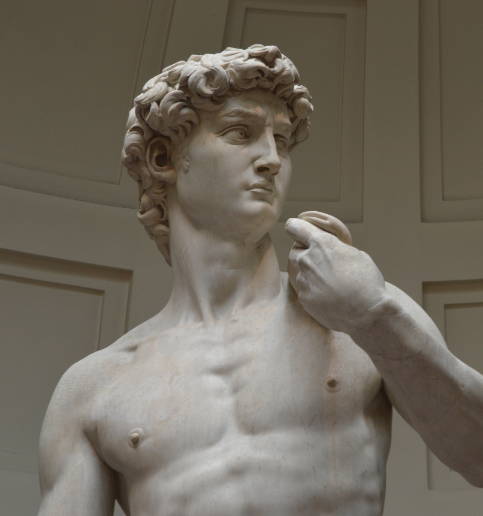

Cultura
Artes maravillosa de italia
En Italia, el enfrentamiento y la convivencia con la antigüedad clásica, considerada como un legado nacional, proporcionó una amplia base para una evolución estilística homogénea y de validez general. Por ello, allí fue posible el surgimiento del arte renacentista, precediendo a todas las demás naciones.

